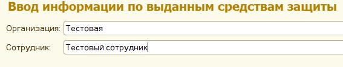
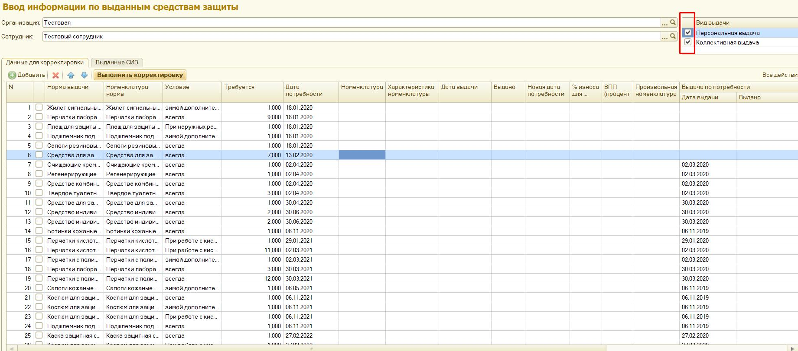
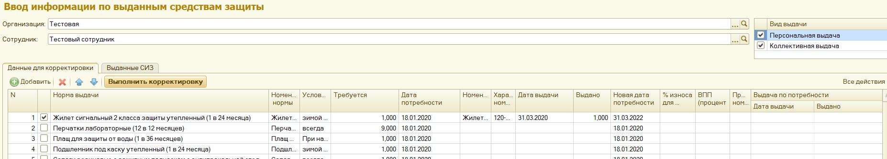
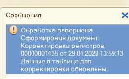
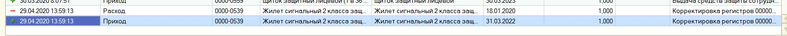
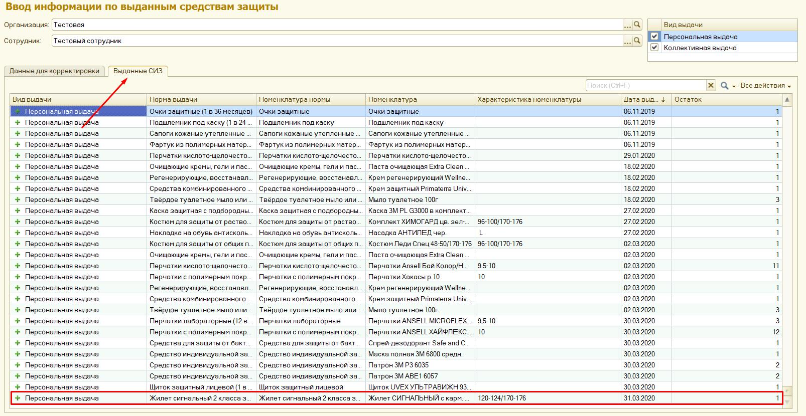

Обработка «Ввод информации по выданным средствам защиты».
Обработка предназначена для ручного внесения данных по ранее выданным средствам защиты. Она необходима в тех ситуациях, когда при внедрении проекта была внесена не вся информация о выдачах по нормам, и требуется довнести информацию, чтобы передвинуть потребность по этим нормам на нужный срок.
Заполняем организацию и указываем сотрудника, которому хотим занести ранее выданные СИЗ:

Табличная часть обработки заполнится потребностью сотрудника по всем нормам, установленным на его рабочее место. При необходимости можно выбрать только коллективные или только персональные нормы:

На скриншоте видно, что для первых шести строчек у сотрудника не заполнены столбцы «Дата выдачи» и «Выдано». Это означает, что по этим нормам для данного сотрудника выдач в базе на текущий момент нет.
Чтобы занести информацию о выдаче, заполняем поля «Номенклатура», «Характеристика номенклатуры» (если у номенклатуры есть размерный ряд), «Дата выдачи», «Выдано» (Количество выданных СИЗ) и устанавливаем слева галочку:

После внесения всех данных заполнится поле «Новая дата потребности». Она рассчитывается как дата выдачи + срок носки нормы выдачи.*
*Если норма с условием «Зимой дополнительно», а результирующая дата не попала в период зимы, новая дата потребности переместится вперед, на дату начала периода зимы.
Заполнив все данные, нажимаем «Выполнить корректировку». Если все данные были заполнены корректно, всплывет сообщение:

Потребность сотрудника по норме передвинется на сформировавшуюся дату новой потребности:

Можно перейти на вкладку «Выданные СИЗ» и убедиться, что информация о выдаче появилась:
Аналогичным образом вносится информация и по нормам, по которым в базе уже есть выдача (для тех строк, где справа заполнено поле «Дата выдачи» и «Выдано»).
Но нужно обратить внимание, что потребность будет двигаться только в тех случаях, если вносимая дата больше, чем дата последней выдачи по этой норме (дата последней выдачи как раз указана в столбце «Дата выдачи» в правой части таблицы).
Если необходимо внести информацию о выдаче по норме, которой на сегодняшний день у сотрудника нет, нажимаем на кнопку «Создать». Внизу таблицы добавится незаполненное поле:
Заполняем в появившейся строке поля «Номенклатура», «Характеристика номенклатуры» (если есть), «Дата выдачи», «Выдано», «Произвольная номенклатура нормы» и устанавливаем галочку. Нажимаем «Выполнить корректировку»
В произвольной номенклатуре нормы указываем предположительное наименование номенклатуры нормы, по которой производилась эта выдача.